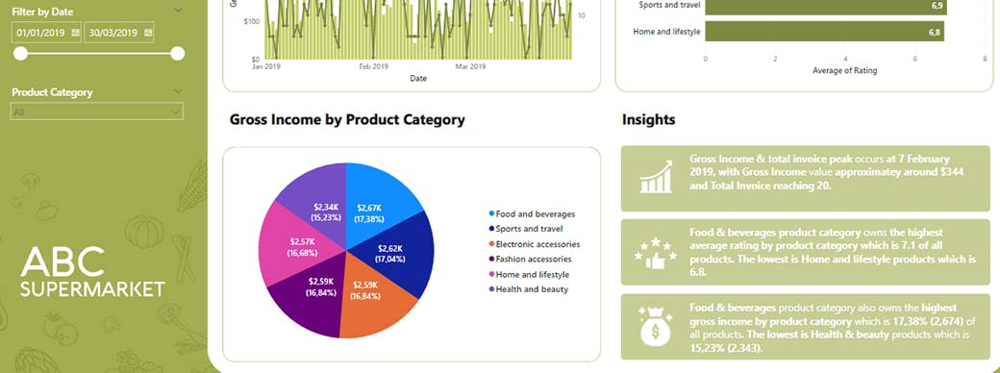
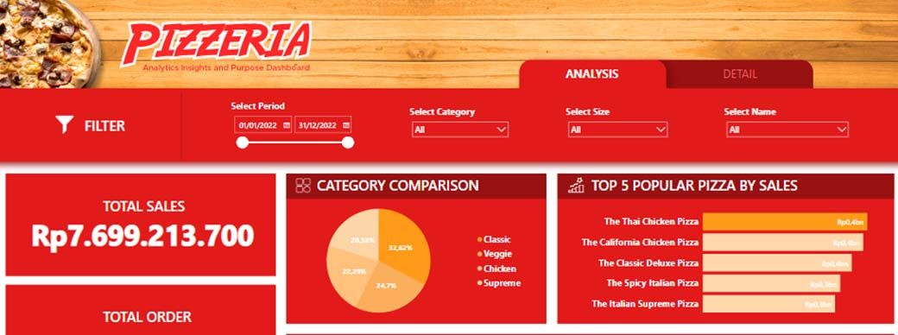
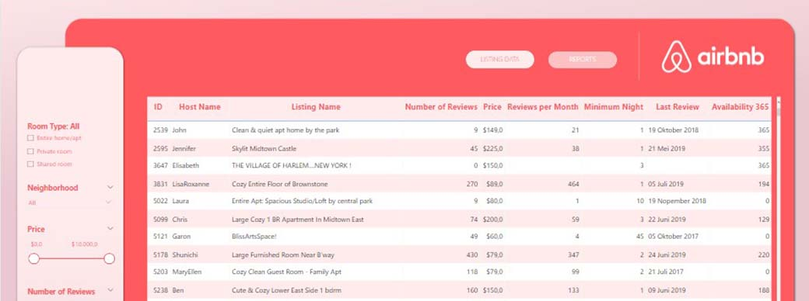
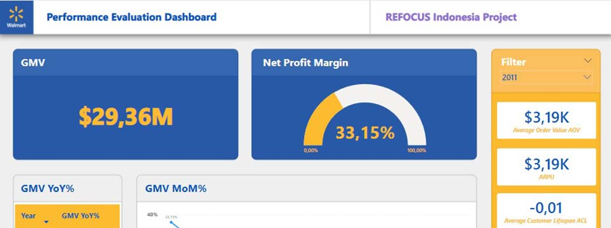
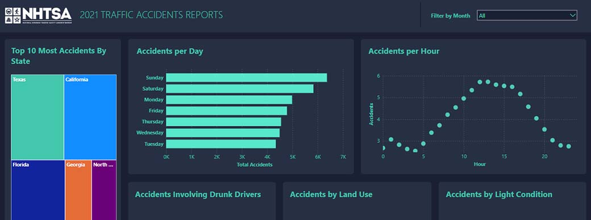

Foodstory Business Performance Dashboard
Interact with the dashboard here
We have been assigned to create a dashboard to assist the management team in better understanding the performance of Food Story. Our task involves collecting and analyzing data from various sources to create interactive visualizations and a dashboard that will aid the management team in making informed decisions about the future of Food Story. The final dashboard should feature well-crafted and easily understandable visualizations, enabling the management team to explore the data in various ways.
ABC Supermarket Performance Evaluation Dashboard
Interact with the dashboard here
This time, I will create a dashboard as a case study project using a dataset from a supermarket. The dataset can be accessed here and it consists of 4 tables containing transaction data from the supermarket, which will be analyzed and visualized. The main goal of creating this dashboard is, of course, data analysis and creating an interactive dashboard with included insights to facilitate and shorten the time for stakeholders to make decisions and strategies in their business.
The main objective is to create a dashboard consisting of 2 pages. The first page of the dashboard will focus on product types, the products that contribute the most to sales, the top-selling items, as well as the daily performance of each product. The second page will show the correlation between quantity and gross income. Both pages already have insights derived from the analysis and visualization.
Pizzeria Business Performance Dashboard
Interact with the dashboard here
This case study project is my first learning project in creating an interactive dashboard with multiple pages. Throughout this project, I have learned to implement design thinking effectively, create a well-designed dashboard that does not overwhelm its users, emphasize data storytelling in each visualization, and create filter panes and navigation within the dashboard. It has been a rather enjoyable project!
AirBnb Listing Data Report Dashboard
Interact with the dashboard here
For my next case study project, I have created an interactive dashboard for Airbnb listing data. This dashboard is designed for the marketing team with the goal of exploring accommodation listing data in the United States, generating reports, and devising quick and accurate strategies.
Walmart Supermarket Performance Dashboard
Interact with the dashboard here
I created this dashboard as part of my final study case project for the fourth module of the Refocus Indonesia data analytics course, focusing on PowerBI. The dashboard contains various interactive charts and graphs that display valuable insights derived from key business metrics such as profit margins, gross merchandise value, average order value, and customer behavior, which significantly impact sales performance.
NHTSA 2021 Traffic Accidents Report
Interact with the dashboard here
This dashboard is the result of my experiment, utilizing the data analysis I previously conducted in PostgreSQL from the NHTSA dataset. I was curious to see how the analysis I had done could be presented in the form of visualizations using PowerBI. Throughout this process, I have learned to use various functions in PowerBI, such as Bookmarks and buttons, which have added new dimensions to my learning experience.